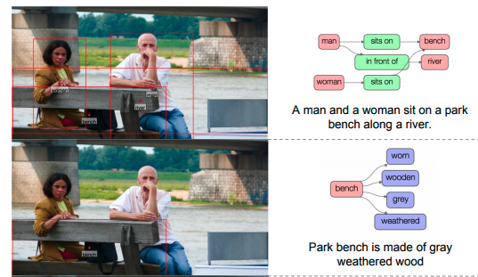

Visual Genome : Connecting Language and Vision Using Crowdsourced Dense Image Annotations

概要
画像をもとにしたシーングラフやそれに関連したVQA等のラベルがついたVisual Genome データセットを作成。SceneGraphの研究分野で一般的に使われているデータセットとなっている。
手法
データセット概要は下図。

データセットの内容については以下で構成されている。
Multiple region graphs and their descriptions
様々な関係性が存在する一つの画像を，一つの説明文だけで完結させてしまうのは現実的ではない。そこで画像内にBoundingBoxを複数用意し，そのなかでのシーングラフ(Region Graphs)，説明文章(Region Descriptions)をそれぞれ作成している。ひとつの画像に対して平均で42個のこのような領域が用意されている。
Multiple objects and their bounding boxes
画像内に平均で２１個の物体情報とそのBoundingBoxを用意。同一物体に対して複数ラベル存在する場合（man and person），大きい括りのラベル(person)が選択される。
A set of attributes
画像内に平均で16個のAttributeラベルを用意。AttributeはObjectにつくものであり，一つのObjectに対して0個以上のAttributeが関連づいている。
A set of relationships
Relationshipとは２つのobjectをつなぐもの。有向グラフ構造のため，Relationshipをもっている２つのobjectの関係性の間には矢印が向く方と向けられる方が存在する。矢印の出発点がsubject，矢印の終着点がobjectと定義される。上の図の例で言えば，jumping over という関係性に関して，subject は man, object は fire hydrant となる。
One scene graph
今までRegionごとに得ていた情報をまとめて，画像全体として一つのScene Graph を作成。（上図の一番下）
データセット
一部の例。より詳しい内容に関しては元論文をチェック。

新規性
シーングラフ用の新たなデータセットの提案。